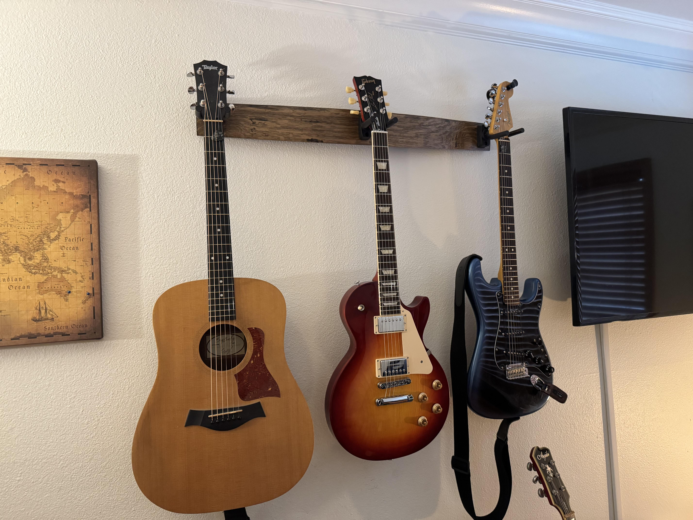

I'll get right to it. I've decided to go back to school and need to make some cash quick to pay tuition. So, it is with a heavy heart that I have decided to sell 3 guitars from my prized collection. If you buy the set, I'll throw in a 15% discount. Otherwise, they are priced individually for sale as well. I am pretty firm on the price, but throw a number out and we can talk!
The far left guitar has been with me for about 5 years now. It was the first guitar I ever got and learned most of the basics on. It was great for building muscle memory and calluses on my hands, but I knew I wanted to move to electric eventually. That was when I moved onto the far right guitar. Once my family saw how committed I was to playing (and listened to me talk forever about playing electric eventually), they all chipped in and got me that Stratocaster about 3 years ago. Lastly is the guitar in the middle. This one is very nice. It plays like a dream and I've only had it about a year now. Truthfully, it was a bit of an impulse buy. I sadly don't get to play it as much as it deserves to be and that is part of why I'm selling it. Yes, I need the money, but this guitar needs mileage on her and someone who can do that. It plays too well to just sit on the wall. With going back to school, I really won't have the time for this one or the others. So, I've resigned to keeping the couple others in my collection for any spare time I have. I've had fun with these ones I'm selling, but it's time for them to find a new home.
....I'm glad you asked
TOTAL = $3600 - $540(**15% discount**) = $3060 for all 3
**OTHERWISE
PRICE IS
AS IS, OBO**
Email: guitarguy25@shredderz.net
Phone: (123)-456-7890